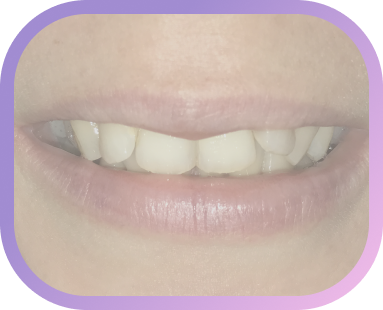

Улыбка мечты в рассрочку от 2900р в месяц!
Почему бы и да!

Личный прием
в отдельном кабинете
160 кв.м. помощи
Высокий рейтинг
стоматологов “Дент-Реал”
по Краснодарскому краю
Уже 16 лет каждый день
мы открыты для Вас
(даже в карантин)
Расписание докторов на
сайте, запись в три клика

Консультация всех
специалистов в одном месте

Структурное подразделение клиники
“ Дент-Реал Плюс”
“ Дент-Реал Плюс”
За исправлением прикуса, можно обращаться в любом возрасте, если он Вам мешает нормально общаться и свободно улыбаться, кроме этого, Вы еще избавитесь от стоматологических заболеваний
Доктор Романченко:
“Помогу обмануть природу и обрести улыбку мечты!
Знаю о стеснении во время смеха не понаслышке, сама прошла курс ношения брекетов”
Знаю о стеснении во время смеха не понаслышке, сама прошла курс ношения брекетов”
Записаться на прием к ортодонту
Посчитаем стоимость брекет-системы?
- Осмотр, чтение снимков, консультация, снятие слепков, фотопротокол- 700р.
- Второй прием:
Фиксация брекет-системы Marquis(USA) на В/Ч - 17000р. - Через месяц:
Фиксация брекет-системы Marquis(USA) на Н/Ч - 17000р. - Активация (смена дуги) - 2500/ челюсть
- Видимый результат уже на третий месяц!
Узнайте, свободно ли время у доктора сегодня?!
Узнать
Опоздать невозможно, но почему не стоит тянуть?
Для того чтобы избежать необратимых последствий, усугубляемых неправильным прикусом, таких как затруднение чистки между скученных зубов и образованием там кариеса, стираемость зубов, снижение высоты трети лица, и даже деформации овала лица:
А также, если у Вас уже появились осложнения выходящие за грани зубного ряда и затрагивающие челюстно-лицевую область, например ограничение в открывании рта, щёлканье сустава, шум или звон в ушах, бруксизм, боли в челюстном суставе, то может потребоваться помощь гнатолога в клинике “Дент-Реал”
Знакомьтесь, Анжелика Сержевна -
доктор, который знает всё о связях зубочелюстной системы и поможет избавиться от боли в суставах!
В паре с ортодонтом им нет равных в формировании здорового и красивого прикуса!
доктор, который знает всё о связях зубочелюстной системы и поможет избавиться от боли в суставах!
В паре с ортодонтом им нет равных в формировании здорового и красивого прикуса!
Записаться на прием к гнатологу
Больше чем слова

На что обратить внимание,
когда Вы консультируетесь у ортодонта?!
когда Вы консультируетесь у ортодонта?!
- Назначил ли Ваш доктор исследование ОПТГ?
- Есть ли необходимость в установке минивинтов?
- Все ли верхушки корней доформированы?
- Мешают ли восьмёрки?
- Лигатурные или самолигирующие брекеты?
- Для чего наносят во время промежуточных чисток AFP гель?
- Говорил ли врач о необходимости ретенционных аппаратов после снятия брекетов?